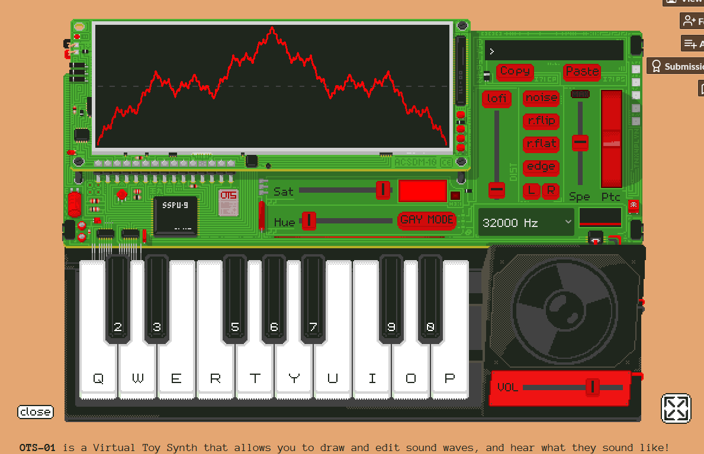
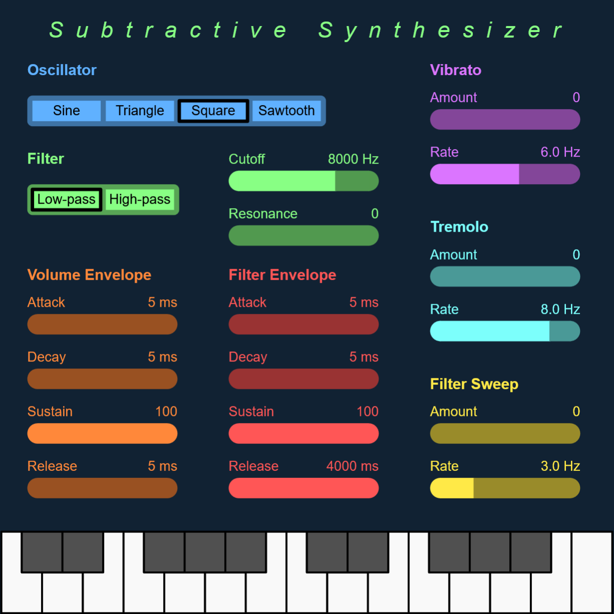
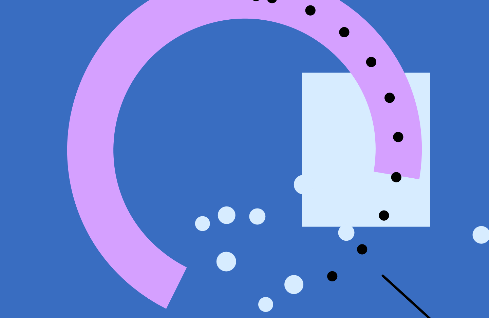
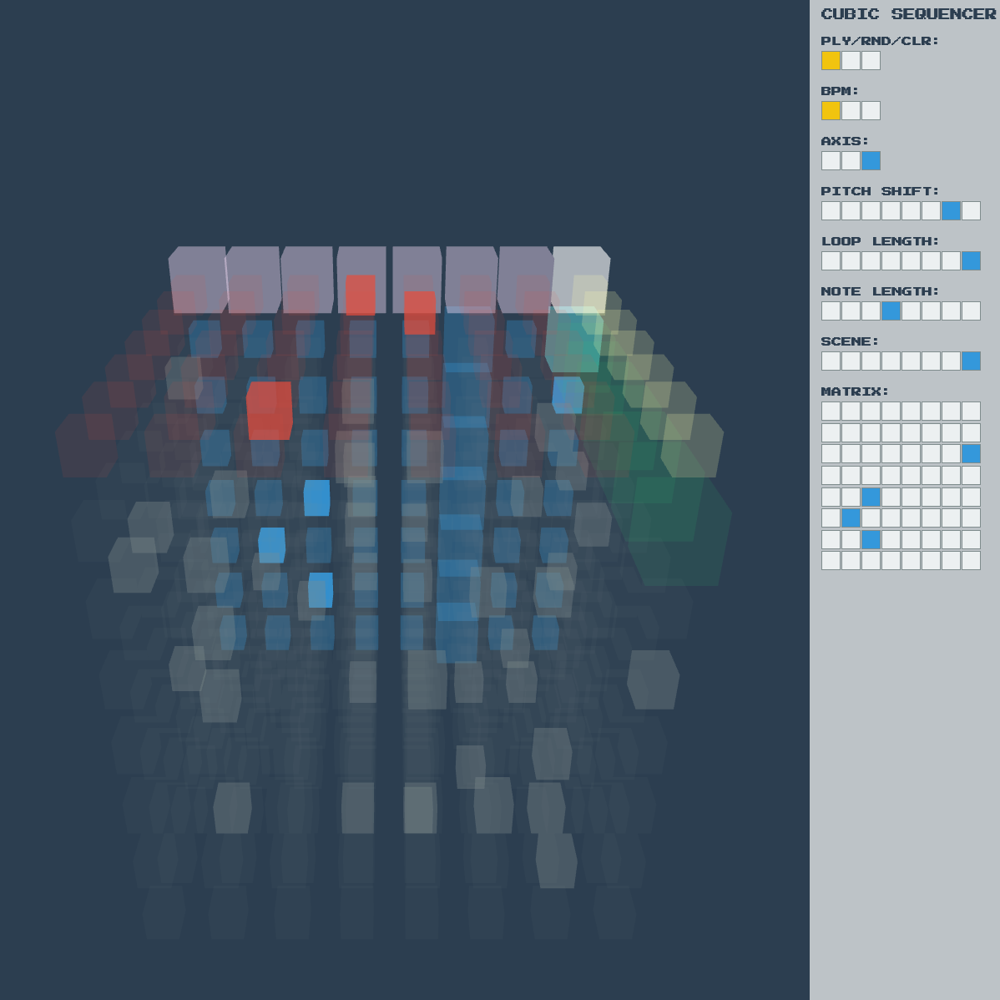

Scenario: Multiplayer Synthesizer
Prompt: Design a synthesizer to be operated by two or more people using a single computer.
Context: Instruments (and increasingly computational devices) are typically understood as being designed to be operated by one person at a time. While many environments exist for playing these alongside others in physical or virtual spaces, there are limited examples of browser-based instruments exploring what a locally cooperative or split screen approach might produce.
Discussion
To put it simply, I believe the main purpose of a multiplayer synthesiser is to allow two people to have fun whilst creating music. The fun of it should come from controlling the instrument based on the other players actions, the feedback (music), and the social interaction throughout. I interpret a “multi-player” synthesiser to mean just that. It only requires two or more players to control it at the same time and doesn’t necessarily have to be cooperative. However, I still believe the design of the synthesiser should strongly encourage cooperative music making. This will give the instrument depth and complexion, leading to a stronger connection between players.
From this purpose, the synth should embody several core values. Firstly, it needs to be easy to learn, especially for those without a musical background; though, there can be complexity with the controls that allows for mastery. There also needs to be clarity with what role each user has which will be achieved through visual and audible feedback. Lastly, cooperation shouldn’t be mandatory but instead strongly encouraged.
Project Overview
Synopsis
I will design a synthesiser intended to be played by two users at once whilst encouraging experimental music-making. By dividing the controls, each player will simultaneously control different parts of the synthesiser, and the instrument will only produce a complete sound with both of the players inputs rather than just one individual.
Response to purpose and worth
The synthesiser's design will respond to the purpose by being satisfying to use. Satisfying visual and audible feedback needs to only come when users are playing harmoniously but in doing so, needs provide feedback to each individual player. Players should be able to quickly understand each of their roles within the playing of the instrument and their impact on the sound's characteristics. This also ties in with how the synthesiser should be “easy to learn”. The UI shouldn’t be overly complex and needs to inform its users of each control input in simple terms or symbols. Dividing the controls between two players keeps the learning curve low because each player only has to focus on their part but cooperation should also be encouraged. Playing solo should result in a fairly dull and flat sound, whereas playing with someone else should reward the user with sound and visuals that are much more satisfying.
Framing
My multiplayer synthesizer will feature a subconscious call-and-response concept. For example, player 1 might play a high note, which will then prompt play 2 to adjust the frequency and volume, prompting player 1 to play a low note. The players aren’t explicitly coordinating with one another but rather subconsciously reacting to what the other player is doing. They’re more so individually controlling their part based on where they believe the composition should go, and perhaps what they think the other player wants. What should be excluded from the design is anything that requires verbal communication. It just wouldn’t work since the players will be hearing the music in real time and will almost always be playing as fast as they could possibly talk.
The synthesiser's controls should be split by mouse and keyboard. This will ensure each player has a unique role, the controls remain simple and easy to learn, and players won’t interfere with one another while playing. The keyboard player will have control of dozens of keys whereas the mouse controller has a precise cursor, scroll wheel, and a left/right button. For instance, the mousemove event could be mapped to parameters like filter cutoff and frequency (dependent on the cursor's axis), where scroll could be used for volume control.
Interaction design analysis
OTS-01
The pixellated interface intentionally characterises the instrument as a "game." This gives the user the impression that it's meant to be played with and explored further. This characterisation also assumes its users have played video games previously and understand the trope where a half-unscrewed screw can be clicked on to unscrew it further. For users with little to no video game experience, taking the faceplate off the keyboard could easily be missed. There's also an expectation that the user understands what a synthesiser is and the jargon and acronyms associated with them. It's important for me to communicate which parts of the screen can be clicked on or hovered over by using identifiable symbols, matching the system to the real world, and marking the keyboard and mouse inputs on screen against their corresponding controls.

OTS-01Electric Telepathy's purpose
The Electric Telepathy synthesiser serves as a way to make more complex compositions. Its interface isn't particularly fun or flashy but it prioritises function, giving the user precise control while ensuring all relevant information is readable. However, it still expects the user to already know how to use a synthesiser and understand the function of each parameter (attack, decay, sustain, etc). These terms would likely appear confusing or intimidating to someone who hasn't used a synth before. This made me think about how I can transcribe these terms for a new user, and what symbols or terms I could use instead. Rather than labelling controls with technical vocabulary, I could represent parameters through more intuitive, visual metaphors. For instance, I could show a sound's shape swelling and fading over time (like the OTS-01 keyboard) in addition to naming the stages of that envelope. This would allow a first-time player quickly understand the functions for these particular controls.

Patatap's worth
Patatap's interface is as simple as it needs to be. Upon entering, the only information relevant to the instrument is the prompt "press any key… and turn up speakers." The value that this interface provides comes from the satisfaction of its visual feedback – its colours, shapes, and the combination of them. If the interface was just a keyboard that just highlighted a key when pressed, it wouldn't be nearly as interesting. What this does sacrifice is control over the sound, which is fine, because Patatap isn't intended to be complex. It's more so a toy to play around with, which is the value it provides. I need to ensure that my interface balances providing satisfying feedback, while still giving enough controls for the user.

Cubic Sequencer's infrormation design
One of the main conflicts I've had so far in the ideation phase is what information to present and how to present it. What information and mechanics should be revealed slowly over time? Could I break the synthesiser up into several levels? All of the information and controls within the Cubic Sequencer interface are visible immediately. In this case, it works for two reasons: firstly, there isn't much of it; secondly, the entire action of adding notes is presented visually within the cube. In other words, all controls are self-explanatory because the feedback is almost always immediate. When you change the pitch, you can hear it. For the multiplayer synthesiser, I may need to introduce some parameters individually over time if their effect isn't immediately obvious or are a bit nuanced.
